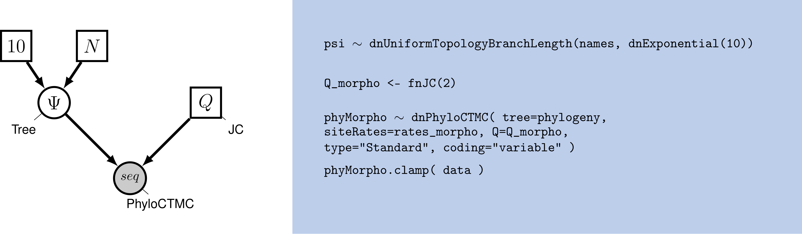
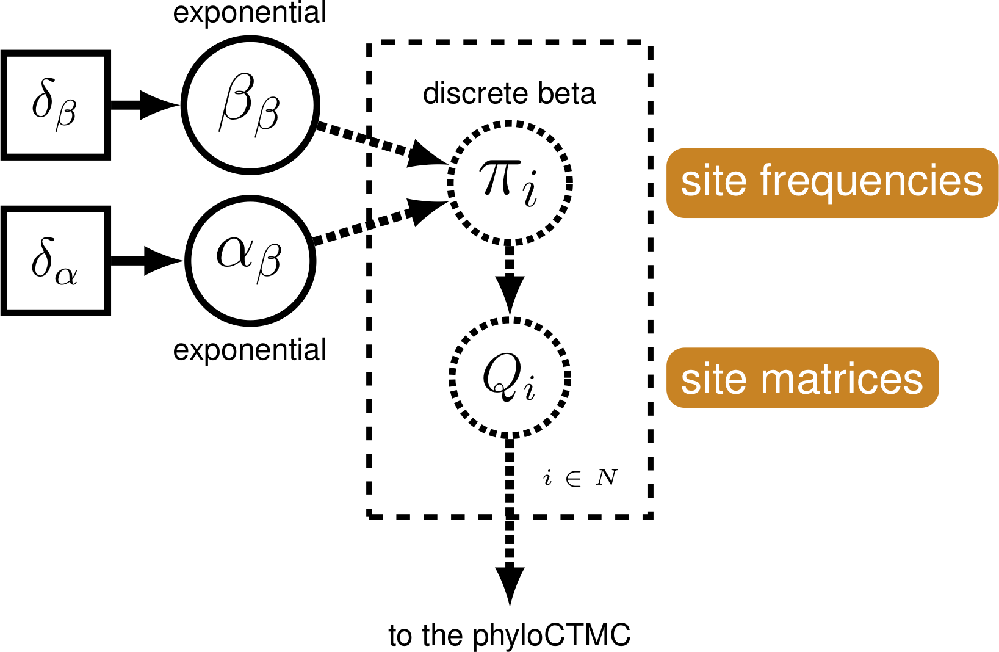

SampleKnitrDocument.RmdFirst, load the Revticulate package and tell it where to find the RevBayes executeable.
Morphological data is commonly used for estimating phylogenetic trees from fossils. This tutorial will focus on estimating phylogenetic trees from discrete characters, those characters which can be broken into non-overlapping character states. This type of data has been used for estimation of phylogenetic trees for many years. In the past twenty years, Bayesian methods for estimating phylogeny from this type of data have become increasingly common.
This tutorial will give an overview of common models and assumptions when estimating a tree from discrete morphological data. We will use a dataset from [@zamora2013]. This dataset contains 27 extinct echinoderm taxa and 60 binary and multistate characters.
As technologies for obtaining low-cost and high-throughput nucleotide sequence data have become available, many scientists have become reliant on molecular data for phylogenetics. However, morphological data remain the only direct observations we have of most extinct organisms, and are an independent data source for understanding phylogeny. Many of the phylogenetic methods we will discuss in this tutorial were invented for use with sequence data. However, these methods are still very useful for discrete morphological data. We will examine some common assumptions for modeling data in a phylogenetic context, then move on to look at relaxing these assumptions.
Modeling discrete morphological data requires an understanding of the underlying properties of the data. When we work with molecular data, we know a priori that certain types of changes are more likely than others. For example, changes within a type of base (purine and pyrimidine) are much more likely than changes between types of bases. This information can be used to add parameters to the phylogenetic model. There are no equivalent and generalizable truths across characters in a morphological data matrix. For example, while 0 and 1 are commonly coded to “presence” and “absence”, this is not always the case, nor are all characters atomized at the same magnitude. For instance, at one character, changing character states may not reflect a large amount of genetic changes. Theca shape (character 2 in the Zamora et al. 2013 dataset), for example appears quite labile. At another, the changes to the character state may reflect a rearrangement of genetic elements, or might have larger ramifications for the organism’s life and behavior. Character 38, the central plate of the lintel, may be one such character, as it changes seldom.
When we work with morphological data in a Bayesian context, we are performing these analyses after a long history of workers performing phylogenetic analysis in a maximum parsimony framework. Under maximum parsimony, trees are proposed. The number of changes in the data implied by the tree are then counted. The tree implying the fewest changes is considered the best. There may be multiple most parsimonious trees in a dataset. Parsimony has been the dominant method for estimating phylogenetic trees from discrete morphological data. Characters that cannot be used to discriminate between tree topologies are not typically collected by workers using parsimony. For example, characters that do not vary are not collected, as they all have the same length (0 steps) on a tree. Likewise, autapomorphies are typically not collected. As we will see later, this has ramifications for how we model the data.
{% figure Mk_model %}  {% figcaption %} Graphical model showing the Mk model (left panel) and corresponding Rev code (right panel). {% endfigcaption %} {% endfigure %}
For many years, parsimony was the only way to estimate a phylogenetic tree from morphological data. In 2001, Paul Lewis published the Mk model of morphological evolution. The Mk model [@Lewis2001] is a generalization of the Jukes-Cantor model [@Jukes1969] of nucleotide sequence evolution. This model, while simple, has allowed researchers to access the toolkit of phylogenetic methods available to researchers working with other discretely-valued data, such as nucleotides or amino acids.
As mentioned above, the Mk model is a generalization of the JC model. This model assumes that all transitions between character states are equal, and that all characters in the matrix have the same transition matrix. The transition matrix for a binary trait looks like so:
\[Q = \begin{pmatrix} -\mu_0 & \mu_{01} \\ \mu_{10} & -\mu_1 &\\ \end{pmatrix} \mbox{ ,}\]
In this matrix, \(\mu\) represents the transition probability between the two states that follow it. A transition matrix for multistate data simply expands.
\[Q = \begin{pmatrix} -\mu_0 & \mu_{01} & \mu_{02} & \mu_{03} \\ \mu_{10} & -\mu_1 & \mu_{12} & \mu_{13} \\ \mu_{20} & \mu_{21} & -\mu_2 & \mu_{23} \\ \mu_{30} & \mu_{31} & \mu_{32} & -\mu_3 \end{pmatrix} \mbox{ ,}\]
However, the Mk model sets transitions to be equal from any state to any other state. In that sense, our multistate matrix really looks like this:
\[Q = \begin{pmatrix} -(k-1)\mu & \mu & \mu & \mu \\ \mu & -(k-1)\mu & \mu & \mu \\ \mu & \mu & -(k-1)\mu & \mu \\ \mu & \mu & \mu & -(k-1)\mu \\ \end{pmatrix} \mbox{ ,}\]
You might notice that these transition rates are not different than what we might expect from an equal-weights parsimony matrix. In practice, the Mk model makes very few assumptions due to the complexity and non-generalizability of morphological data.
This model may strike some readers as too simplistic to be adequate for morphological data. However, Bayesian methods are less likely to be mislead by homoplasy than is parsimony [@Felsenstein1983. More recent work has demonstrated that the model outperforms parsimony in many situations, particularly those in which there is high homoplasy [@Wright2014], with empirical work demonstrating that it fits many datasets reasonably well [@Wright2016].
In the first part of this tutorial, we will estimate a tree under the Mk model as proposed by Lewis (2001). We will then relax core parameters of the model.
{% subsubsection Ascertainment Bias %}
One remaining component of the model we have not yet discussed is ascertainment bias. Because workers using parsimony do not collect invariant characters and seldom collect autapomorphies, our data are biased. Imagine, for a moment, that you were to measure the average height in a room. But first, you asked the 10 shortest people to leave. Your estimate of the average height would be too tall! In effect, this happens in the morphological data, as well. Because the characters with the fewest changes are not collected, we over estimate the amount of evolutionary change on the tree. At the time of publication, Lewis (2001) also included a correction factor for this bias.
These original corrections involved simulating parsimony non-informative characters along each proposed tree. These would be used to normalize the likelihood value. While this procedure is statistically valid, it is a bit slow. There are multiple ways to perform this correction [@allman08b]. RevBayes uses a dynamic likelihood approach to avoid repeated simulations.
This tutorial follows a specific format for issuing instructions and information.
The boxed instructions guide you to complete tasks that are not part of the RevBayes syntax, but rather direct you to create directories or files or similar.
Information describing the commands and instructions will be written in paragraph-form before or after they are issued.
All command-line text, including all Rev syntax, are given in monotype font. Furthermore, blocks of Rev code that are needed to build the model, specify the analysis, or execute the run are given in separate shaded boxes. For example, we will instruct you to create a constant node called example that is equal to 1.0 using the <- operator like this:
example <- 1.0 example
It is important to be aware that some PDF viewers may render some characters given as differently. Thus, if you copy and paste text from this PDF, you may introduce some incorrect characters. Because of this, we recommend that you type the instructions in this tutorial or copy them from the scripts provided.
First create a directory for this tutorial and name it RB_MultistateCharacters_Tutorial, or any name you like. Navigate to this new directory and create subdirectories called data and scripts.
Download the data file called [
Cinctans.nex] and save it to yourdatadirectory.
In this exercise, we advise you to record all your commands via a text editor in a set of files – corresponding to the different modules of the model – that will be easily managed and interchanged. Call them
mcmc_mk_tutorial.Rev,mk_model_tree.Rev,mk_model_gamma.Rev, and place them inscripts.
When you execute RevBayes in this tutorial, you will do so within the main directory (RB_MultistateCharacters_Tutorial), thus, if you are using a Unix-based operating system, we recommend that you add the RevBayes binary to your path. Alternatively make sure that you set the working directory to the directory you stored the scripts and data in.
In the following sections you will begin the mcmc_mk_tutorial.Rev file and write the Rev commands for loading in the taxon list and managing the data matrices. Then, starting in {% ref subsec_Mk_model %}, you will move on to specifying each of the Mk model components, in files mk_model_tree.Rev and mk_model_gamma.Rev. Once the model specifications are complete, you will complete the MCMC script with the instructions given in {% ref subsec_complete_MCMC %}.
RevBayes uses the function readDiscreteCharacterData() to load a data matrix to the workspace from a formatted file. This function can be used for both molecular sequences and discrete morphological characters. Import the morphological character matrix and assign it the variable morpho.
clearRev()
morpho <- readDiscreteCharacterData("Cinctans.nex") morpho
We will dig into the model momentarily. But first, we will create some variables that are used in our analysis, but are not parameters. We will assign these variables with the constant node assignment operator, <-. Even though these values are used in our scripts, they are not parameters of the model.
We will first create a constant node called num_taxa that is equal to the number of species in our analysis (27). We will also create a constant node called num_branches representing the number of branches in the tree, and one of the taxon names. This list will be used to initialize the tree.
num_taxa <- morpho.size() num_branches <- 2 * num_taxa - 2 taxa <- morpho.names() taxa
Next, create a workspace variable called moves, a vector containing all of the MCMC moves used to propose new states for every stochastic node in the model graph.
moves = VectorMoves()
One important distinction here is that moves is part of the RevBayes workspace and not the hierarchical model. Thus, we use the workspace assignment operator = instead of the constant node assignment <-.
In this section you will move on to specifying the Mk model components, starting in file mk_model_tree.Rev. First, we will create a joint prior on the branch lengths.
br_len_lambda ~ dnExp(0.2) moves.append(mvScale(br_len_lambda, weight=2))
This prior specifies that branch lengths will be drawn from an exponential distribution with parameter 0.2.
Now, we combine the branch lengths with a uniform prior on topology to make a tree. The uniform prior simply means no tree is more likely a priori than any other. This can be easily changed, for example, to use a starting tree. We then specify MCMC moves on the topology, NNI and SPR. These moves propose new topologies. In this way, we propose and evaluate new sets of relationships. We perform these moves frequently because these parameters are really important. We will also move each of the branch lengths each iteration. The scale move scales the current branch length. Finally, we monitor the tree length by adding a deterministic node with the operator :=. This is a quantity many biologists are interested in.
phylogeny ~ dnUniformTopologyBranchLength(taxa, branchLengthDistribution=dnExponential(br_len_lambda)) moves.append(mvNNI(phylogeny, weight=num_branches/2.0)) moves.append(mvSPR(phylogeny, weight=num_branches/10.0)) moves.append(mvBranchLengthScale(phylogeny, weight=num_branches)) tree_length := phylogeny.treeLength() phylogeny
You can even look at the phylogeny using Phytools:
Move on to file mk_model_gamma.Rev, where we will add Gamma-distributed rate variation and specify moves on the parameter of the Gamma distribution.
alpha_morpho ~ dnUniform( 0, 1E6 ) rates_morpho := fnDiscretizeGamma( alpha_morpho, alpha_morpho, 4 ) moves.append(mvScale(alpha_morpho, lambda=1, weight=2.0))
If you aren’t a big stats person, this might not mean much to you, in terms of what this distribution actually looks like. But it is important to develop intuitions for what common distributions look like and what this says about our data. So, we can use R’s built-in graphics capabilities to have a look at what 1000 draws from this gamma will look like.
doRev(' alpha_morpho ~ dnUniform( 0, 1E6 ); rates_morpho := fnDiscretizeGamma( alpha_morpho, alpha_morpho, 4 ) ') library(ggplot2) alpha_value <- getRevObj(name = "alpha_morpho", coerce = TRUE) alpha_value draws <- rgamma(1000, shape = alpha_value, rate = alpha_value) hist(draws, xlab = "Value")
Next we will create a \(Q\)-matrix. Recall that the Mk model is simply a generalization of the JC model. Therefore, we will create a \(Q\)-matrix using fnJC, which initializes \(Q\)-matrices with equal transition probabilities between all states. Since we have multistate data, we need to specify different \(Q\)-matrices for the different number of character states. For example, it would not make sense to model a 5-state character using a model saying there are only two character states.
To do this, we have written a loop in which we break up the data set into partitions according to the number of character states that character has. Then, we specify a \(Q\)-matrix in the correct dimensions. We do not retain any partitions that do not have any characters. For example, if we tried to partition the characters with 4 states, and there were none, we would not create a \(Q\)-matrix.
Then, we combine each partition, Gamma-distributed rate heterogeneity, and the tree together into what is called the phyloCTMC. This is the joint set of model parameters that will be used the model these data. Each partition is then clamped to its model.
n_max_states <- 7
idx = 1
morpho_bystate[1] <- morpho
for (i in 2:n_max_states) {
morpho_bystate[i] <- morpho # make local tmp copy of data
morpho_bystate[i].setNumStatesPartition(i) # only keep character blocks with state space equal to size i
nc = morpho_bystate[i].nchar() # get number of characters per character size with i-sized states
if (nc > 0) { # for non-empty character blocks
q[idx] <- fnJC(i) # make i-by-i rate matrix
m_morph[idx] ~ dnPhyloCTMC( tree=phylogeny,
Q=q[idx],
nSites=nc,
siteRates=rates_morpho,
type="Standard") # create model of evolution for the character block
m_morph[idx].clamp(morpho_bystate[i]) # attach the data
m_morph[idx]
idx = idx + 1 # increment counter
}
}We see some familiar pieces: tree, \(Q\)-matrix and rates_morpho. We also have two new keywords: data type and coding. The data type argument specifies the type of data - in our case, “Standard”, the specification for morphology. All of the components of the model are now specified.
{% subsection Complete MCMC Analysis | subsec_complete_MCMC %}
{% subsubsection Create Model Object | subsec_Mod_Obj %}
Back in file mcmc_mk_tutorial.Rev, we can now create our workspace model variable with our fully specified model DAG. We will do this with the model() function and provide a single node in the graph (phylogeny).
mymodel = model(phylogeny)
The object mymodel is a wrapper around the entire model graph and allows us to pass the model to various functions that are specific to our MCMC analysis.
{% subsubsection Specify Monitors and Output Filenames | subsubsec_Monitors %}
The next important step for our Rev-script is to specify the monitors and output file names. For this, we use the vector called monitors that will take each sample and record or output our MCMC.
monitors = VectorMonitors()
The first monitor we create will monitor every named random variable in our model graph. This will include every stochastic and deterministic node using the mnModel monitor. The only parameter that is not included in the mnModel is the tree topology. Therefore, the parameters in the file written by this monitor are all numerical parameters written to a tab-separated text file that can be opened by accessory programs for evaluating such parameters. We will also name the output file for this monitor and indicate that we wish to sample our MCMC every 10 cycles.
monitors.append( mnModel(filename="output/mk_gamma.log", printgen=10))
The mnFile monitor writes any parameter we specify to file. Thus, if we only cared about the branch lengths and nothing else (this is not a typical or recommended attitude for an analysis this complex) we wouldn’t use the mnModel monitor above and just use the mnFile monitor to write a smaller and simpler output file. Since the tree topology is not included in the mnModel monitor (because it is not numerical), we will use mnFile to write the tree to file by specifying our phylogeny variable in the arguments.
monitors.append( mnFile(filename="output/mk_gamma.trees", printgen=10, phylogeny))
The third monitor we will add to our analysis will print information to the screen. Like with mnFile we could tell mnScreen which parameters we’d like to see updated on the screen.
monitors.append( mnScreen(printgen=100))
Once we have set up our model, moves, and monitors, we can now create the workspace variable that defines our MCMC run. We do this using the mcmc() function that simply takes the three main analysis components as arguments. Furthermore, we will perform and combine two independent MCMC runs to ensure proper convergence.
mymcmc = mcmc(mymodel, monitors, moves, nruns=2, combine="mixed")
The MCMC object that we named mymcmc has a member method called .run(). This will execute our analysis and we will set the chain length to 10000 cycles using the generations option.
mymcmc.run(generations=10000, tuningInterval=200)
Once our Markov chain has terminated, we will want RevBayes to close. Tell the program to quit using the q() function.
Note that running long MCMC analyses is not adviseable in Revticulate. Because the package passes the code to RevBayes, where it is run, this pipeline is prone to being interrupted, as well as being slower than simply running it in RevBayes. You can extract the above tutorial using knitr’s built-in purl functionality like so:
knitr::purl(input = "SampleKnitrDocument.Rmd", "SampleRevScript.Rev")
You may note that some cells contain the phrase purl=FALSE. RevBayes cannot run R code. To exclude cells containing R code, purl=FALSE is used. By default purled Rev code is commented out. Simply open the files and remove the comment marks to run.
Execute the MCMC Analysis
We will now execute an MCMC analysis.
Begin by running the RevBayes executable on your MCMC script. In Unix systems, from the RB_MultistateCharacters_Tutorial folder directory, type the following in your terminal (if the RevBayes binary is in your path) : rb scripts/mcmc_mk_tutorial.Rev
When the analysis is complete, RevBayes will quit and you will have a new directory called output that will contain all of the files you specified with the monitors.
We can look at the log files in the software Tracer. We can also calculate several different types of summary trees:
trace = readTreeTrace("output/mk_gamma.trees") # Read in the tree trace mccTree(trace, file="output/mk_gamma.mcc.tre" ) # Construct and save the maximum clade credibility (MCC) tree
RevBayes can calculate MCC trees, MAP trees, and consensus trees. Have each person at your table try one, and see how they differ.
For this next portion of the tutorial, we will choose and edit some pieces of the model. Feel free to add your own innovations. For this, you will create copies of your previous Rev scripts, and modify them. Make sure to change the file names in the source() function accordingly before running the MCMC!
As we discussed, there is reason to believe a lognormal distribution may fit morphological data better than a gamma. RevBayes makes it very natural to discretize any distribution you might like to work with.
rates_morpho := fnDiscretizeDistribution( dnLognormal(ln(alpha_morpho), 0.01), 4 )Can you figure out which line you might replace with this code? Do it, and change your output files to indicate that this is estimation uses a lognormal distribution. Re-run your Rev script.
As discussed earlier in the section Ascertainment_Bias, we also need to correct for ascertainment bias.
Create a copy of your previous
Revscript, and call it mkv_model_gamma.Rev. You will need to modify theRevcode provided in this section in this file.
In RevBayes it is actually very simple to add a correction for ascertainment bias. You only need to set the option coding="variable" in the dnPhyloCTMC. Coding specifies what type of ascertainment bias is expected. We are using the variable correction, as we have no invariant character in our matrix. If we also lacked parsimony non-informative characters, we would use the coding informative.
phyMorpho ~ dnPhyloCTMC(tree=phylogeny, siteRates=rates_morpho, Q=Q_morpho, type="Standard", coding="variable")The Mk model makes a number of assumptions, but one that may strike you as particularly unrealistic is the assumption that characters are equally likely to change from any one state to any other. That means that a trait is as likely to be gained as lost. While this may hold true for some traits, we expect that it may be untrue for many others.
RevBayes has functionality to allow us to relax this assumption [@ Nylander2004 %}. We do this by specifying a beta prior on state frequencies. Stationary frequencies impact how likely we are to see changes in a character. For example, it may be very likely, in a character, to change from 0 to 1. But if the frequency of 0 is very low, we will still seldom see this change.
We can think of a Q matrix as looking like so:
\[Q = \begin{pmatrix} -\mu_0\pi0 & \mu_{01}\pi0 \\ \mu_{10}\pi1 & -\mu_1\pi1 &\\ \end{pmatrix} \mbox{ ,}\]
In which the probability of changing states depends not solely on the transition probability, but also the frequency of the starting state. For example, if we have a rare character state, we do not expect to see many transitions from the rare state to another. \(\pi\) is the value chosen to represent state frequency commonly in phylogenetic models.
We can exploit the relationship between state frequencies and observed changes to allow for variable Q-matrices across characters. To do this, we generate a beta distribution on state frequencies, and use the state frequencies from that distribution to generate a series of Q-matrices used to evaluate our data [@ Pagel2004 Nylander2004 Wright2016 %}.
This type of model is called a mixture model. There are assumed to be subdivisions in the data, which may require different parameters (in this case, state frequencies). These subdivisions are not defined a priori. This model has previously been shown to be effective for a range of empirical and simulated datasets [@ Wright2016 %}.
{% figure morpho_graphical_model %}  {% figcaption %} Graphical model demonstrating the discretized beta distribution for allowing variable state frequencies. {% endfigcaption %} {% endfigure %}
Make a copy of the Rev script you made earlier. Call it
mkv_model_gamma_discretized.Rev. This new script will contain the new model parameters and models.
We will use a discretized beta distribution to place a prior on the state frequencies. The beta distribution has two parameters, \(\alpha\) and \(\beta\). These two parameters specify the shape of the distribution. State frequencies will be evaluated according to this distribution, in the same way that rate variation is evaluated according to the gamma distribution. The discretized distribution is split into multiple classes, each with its own set of frequencies for the 0 and 1 characters. The number of classes can vary; we have chosen 4 for tractability. Note that we need to make sure that this discretization results in a symmetric model, therefore we will use only one parameter for the beta distribution: beta_scale such that \(\alpha = \beta\).
To simplify the analysis, and make it tractable within the time period, we will only use the binary characters.
morpho.setNumStatesPartition(2)Next, we will set up the prior on \(\beta\).
num_cats = 4
beta_scale ~ dnLognormal( 0.0, sd=2*0.587405 )
moves.append( mvScale(beta_scale, lambda=1, weight=5.0 ) )Above, we initialized the number of categories, the parameters of the beta distribution, and the moves on these parameters.
Next, we set the categories to each represent a quadrant of the beta distribution specified by beta_scale.
cats := fnDiscretizeBeta(beta_scale, beta_scale, num_cats)If you were to print the cats variable, you would see a list of state frequencies like so:
[ 0.011, 0.236, 0.764, 0.989 ]Using these state frequencies, we will generate a new vector of Q-matrices. Because we are varying the state frequencies, we must use a Q-matrix generation function that allows for state frequencies to vary as a parameter. We will, therefore, use the fnF81 function.
for (i in 1:cats.size())
{
Q[i] := fnF81(simplex(abs(1-cats[i]), cats[i]))
}Additionally, in RevBayes we need to specify the probabilities that a site evolves according to one of the Q-matrices. For this model the probabilities must be equal because we need to guarantee that the model is symmetric. Thus, we use a simplex function to create a vector that sums to 1.0.
mat_prior <- rep(1,num_cats)
matrix_probs ~ dnDirichlet(mat_prior)
moves.append( mvBetaSimplex(matrix_probs, weight=3.0) )
moves.append( mvDirichletSimplex(matrix_probs, weight=1.5) )Finally, we make the CTMC for the model:
phyMorpho ~ dnPhyloCTMC(tree=phylogeny, siteRates=rates_morpho, Q=Q, type="Standard", coding="variable", siteMatrices=matrix_probs)
phyMorpho.clamp(morpho)This model can be embedded in the for loop seen in {% ref subsec_Mk_model %} to work with multi-state characters. An example is provided in script mkv_model_gamma_discretized_multistate.Rev.